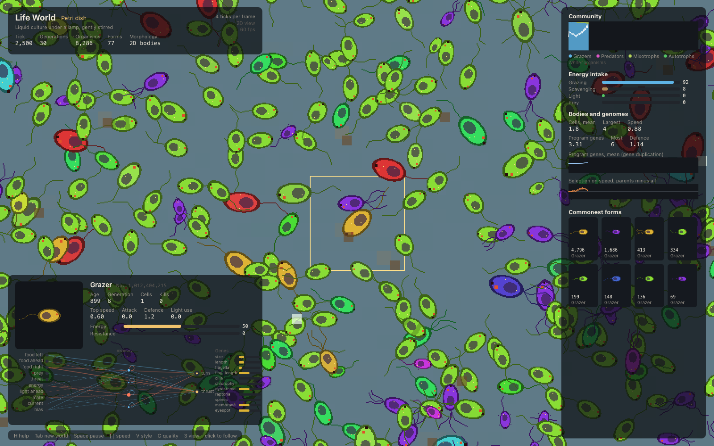
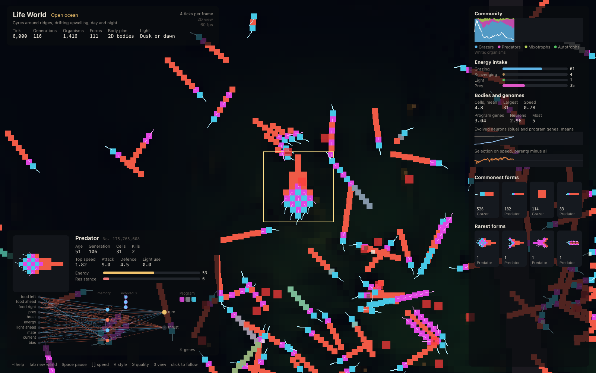

Research areas
Research
The programme connects organism development, ecological experiments, and population genetics through computational models.
Artificial life and evolutionary development
Life World is a spatial model of organisms whose bodies, brains and ecological roles develop from inherited genomes.
Each organism is diploid. Its genome holds a developmental program, a brain and a set of morphological and physiological traits. A body grows from one cell by that program; the brain turns what it senses into turning and thrust; the body sets what it can eat, how fast it swims, how well it fights and what it costs to run. Organisms that gather enough energy breed, their genomes recombine and mutate, and lineages evolve.
What they become is left to evolution. The founders are a three-cell grazer. Predators, armour, eyes, photosynthesis, new body plans and longer developmental programs appear only if they evolve.
The companion Genomic World project studies population genetics and climate adaptation. Its test suite compares drift, mutation-selection balance, linkage decay, selection and fixation with theory.
Pixels from the genome
The default view draws the world straight from the grids the simulation keeps: each world cell takes its colour from its algae, detritus, flow and terrain, and each body cell is a square of its type's colour, laid out where the developmental program put it. Single cells are rasterised from their morphological genes. The frame is drawn at half size and scaled up by the GPU, so a full-screen frame takes about 12 ms. V switches to the smooth natural, bright-field and dark-field styles.
The ocean in pixels, following a predator.

A petri dish in morphology mode: outline, nucleus, eyespot, flagella and cilia, each from a gene.
Evolved networks, and the rarest forms

A followed predator at tick 6,000. Its brain: senses on the left, the fixed core, then three evolved neurons (rings coloured by activation), wired into turning and thrust. On the right, the commonest forms and the rarest, each held by one organism.
Three ways to build an organism

Body plan
Cells of eight types grow from a program of cell-identity genes for mouths, motors, eyes, armour, spikes, stores, and photosynthesis. Gene duplication can add identities to the program, within its 48-gene-per-haplotype storage limit.
Morphology
One cell built as a protist is. Size, shape, pigment, flagella, cilia, spines, membrane, eyespot, cytostome, raptorial organelles and chlorophyll are genes, and they set both how it looks and what it can do.

Combined, in 3D
The multicellular body, each cell sized, tinted and made better or worse at its job by the morphological genes. Bodies can grow in two dimensions or three.
2D and 3D views
The 3D view ray-marches the terrain so ridges and dish walls stand up, and draws every body cell as a lit sphere. The camera orbits and follows.
Population genetics and climate adaptation
Genomic World simulates individuals in space and tracks ecological and evolutionary change. Diploid populations forage, reproduce and evolve on a 256 by 256 torus with a latitudinal temperature gradient. Each genome carries 128 loci across four chromosomes, with recombination and mutation.
The model tracks allele frequencies, marker heterozygosity, regional FST, adaptation to local temperature, heritability, dispersal and genetic load. Its experiments vary mutation rate, climate, population bottlenecks and mountain passes.
Read the Genomic World source and run instructions on GitHub.